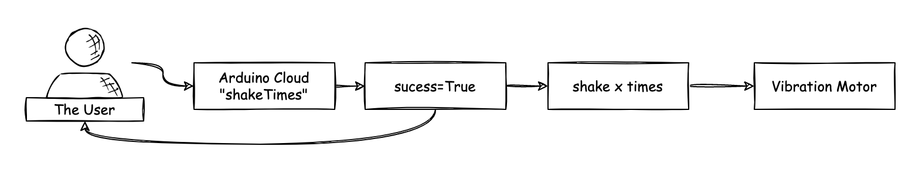
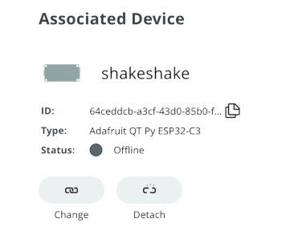

The challenge üîó
While working with the Everactive Development Kit that I keep at home, I often need to interact with the sensors physically —to test our motion sensor, for example. This of course forces me to have the kit close by, which is inconvenient. I would like to be able to activate the sensors remotely when I am working from the office or my favorite coffee shop.
On the other hand, I have been looking for an excuse to use the Arduino IoT Cloud service. They claim to offer “The simplest, fastest, low-code way to get started with connected projects”. Arduino builds some great products, I am curious about what they have developed for their platform.
This is a great opportunity to overengineer a project; so naturally, I’m obliged. üòú
The solution üîó
The general idea I came up with follows a very common IoT pattern: A cloud service ‚Äîthe Arduino IoT Cloud in this case‚Äî acts as the conduit to send commands to a microcontroller deployed at the edge. The microcontroller has a secure connection to the Internet and exchanges messages with a lightweight protocol, like MQTT. The commands are sent to the Cloud, via a Web GUI or API, and relayed to the edge device that functions as the actuator for a small vibration motor (two actually) attached to the Eversensor. This should activate the motion sensor and produce a reading that I can get from Everactive’s Developer Console.
click to zoom in
Like I promised: slightly over-engineered.
Bill of Materials üîó
To implement this project I used:
- A couple of Vibration Motor Modules (for a good punch) attached to the Eversensor.
- An Adafruit Qt esp32-c3 dev board with Wifi connectivity as the actuator.
- Arduino IoT Cloud: to communicate with the motors.
- A tiny protoboard, some wires, and soldering material.
click to zoom in
The esp32-c3 from Adafruit is a cool board: tiny and with WiFi and BLE support. It has just the right amount of computing power that I need and it is compatible with the Arduino IoT Cloud.
click to zoom in
There are many options, but I chose this motor module for its ease of use and to save me some soldering —which is not my forté.
Wiring and assembly üîó
The first order of business is to wire the motors to the dev board. I want to control the motor signal with one of the GPIO pins, the #3 to be precise. The esp32-c3 pins serve multiple purposes, and A1 acts as GPIO 3. The rest is just 5v power and ground. Both motors are wired to the same pins.
click to zoom in
More on the board’s pinout here: https://learn.adafruit.com/adafruit-qt-py-esp32-c3-wifi-dev-board/pinouts.
Controlling the Motors üîó
I used Arduino code to program the microcontroller. The motor modules I selected are very easy to use, they support a simple high/low activation via a digital signal, which is all I need.
The simplest Arduino code to operate the motors looks like this:
int motorPin=3;
void setup() {
// motor pin
pinMode(motorPin, OUTPUT );
}
void loop() {
digitalWrite(motorPin, HIGH); // turn the Motor all the way up
delay(2500);
digitalWrite(motorPin, LOW); //turn the motor off
delay(1000);
}
Receiving messages from the Cloud üîó
The program I need is a little bit more complex, but still straightforward: I used a couple of variables in the Arduino IoT Cloud and the built-in data synchronization mechanisms its SDK provides out of the box.
The board reacts to the changes in a Cloud variable I call shakeTimes, and activates the motor accordingly. A success variable is set to notify that the command was received.
 click to zoom in
Setting up the Arduino IoT Cloud project üîó
Now I can implement my plan in the Arduino IoT Cloud console: https://create.arduino.cc
- In the “Devices” panel, I can register my dev board as a new device.
click to zoom in
I have to use the 3rd party option because this is a board from Adafruit.
click to zoom in
The specific model is “Adrafruit QT Py ESP32-C3”.
click to zoom in
When registering devices, make sure to take note of the Secret key and keep it handy, you’ll need it to program the board and will never see it again. Not that it happened to me
- In the “Things” panel I create a new “Thing” ( üôÑ ) to build the project around it.
 click to zoom in
click to zoom in
A “Thing” in the Arduino IoT Cloud is where all the action happens. A Thing is associated with a device, it can be programmed with Arduino sketches and can exchange information using variables and callbacks.
click to zoom in
I associate the Thing with the device I just registered.
 click to zoom in
click to zoom in
My board is Wifi-enabled, and I can set up the network parameters from this panel. This information will be included in the Arduino sketches automatically. I also add the Secret Key for authentication.
- Variables to exchange information
click to zoom in
A read-write variable is necessary to receive the command parameters. In this case, I want the board to receive the number of times I want the motor to vibrate.
click to zoom in
And I will use a read-only boolean to acknowledge the execution of the command.
- In the “Dashboards” panel I created the GUI to interact with the variables. I added widgets for the two variables I created before.
click to zoom in
The default widgets do just fine: I can type values in the shakeTimes input box, and get feedback from the boolean value in the “LED” widget.
click to zoom in
- Programming the board
The Web IDE has created a bit of boilerplate code for me based on my configuration. This code is enough to have the board boot up, connect to the network, and communicate with the cloud variables. I just need to add my logic on top of that:
click to zoom in
I see from the auto-generated comments that the two cloud variables are already declared in the code:
int shakeTimes;
bool success;
The setup() function is already populated with the serial and the Cloud library initialization. I initialize the pin I will use to control the motors:
void setup() {
// motor pin
pinMode(motorPin, OUTPUT );
Because I want the LED widget in the dashboard to reflect the status of the actuator, I have to be sure to set the value to false in the loop() function.
void loop() {
success=false;
ArduinoCloud.update();
}
The real magic happens when the shakeTimes variable is modified. The Arduino IoT Cloud library prepared a function for me to capture this event and work with the new value.
void onShakeTimesChange() {
// Add your code here to act upon the ShakeTimes change
if(shakeTimes>0){
shake(shakeTimes);
}
}
Note that all the plumbing to sync the variable value from the dashboard to the board is abstracted out by the Arduino IoT Cloud library. Pretty cool, ha! but more on this later.
The shake function is responsible for updating the success variable to acknowledge the command, and for activating — and deactivating — the motor as many times as specified in the value.
void shake(int laps){
if(laps<=0){
laps = 1;
}
Serial.println("shaking");
success=true;
ArduinoCloud.update();
for(int i=0; i<laps; i++){
digitalWrite(motorPin, HIGH); // turn the Motor all the way up
delay(2500);
digitalWrite(motorPin, LOW); //turn the motor off
delay(1000);
}
}
This is what the full code looks like:
/*
Sketch generated by the Arduino IoT Cloud Thing "shakeit"
https://create.arduino.cc/cloud/things/0173e502-f6e5-4f02-ac02-16127f6c1aa0
Arduino IoT Cloud Variables description
The following variables are automatically generated and updated when changes are made to the Thing
int shakeTimes;
bool success;
Variables which are marked as READ/WRITE in the Cloud Thing will also have functions
which are called when their values are changed from the Dashboard.
These functions are generated with the Thing and added at the end of this sketch.
*/
#include "thingProperties.h"
int motorPin=3;
void setup() {
// motor pin
pinMode(motorPin, OUTPUT );
// Initialize serial and wait for port to open:
Serial.begin(9600);
// This delay gives the chance to wait for a Serial Monitor without blocking if none is found
delay(1500);
// Defined in thingProperties.h
initProperties();
// Connect to Arduino IoT Cloud
ArduinoCloud.begin(ArduinoIoTPreferredConnection);
/*
The following function allows you to obtain more information
related to the state of network and IoT Cloud connection and errors
the higher number the more granular information you’ll get.
The default is 0 (only errors).
Maximum is 4
*/
setDebugMessageLevel(2);
ArduinoCloud.printDebugInfo();
}
void loop() {
success=false;
ArduinoCloud.update();
}
void shake(int laps){
if(laps<=0){
laps = 1;
}
Serial.println("shaking");
success=true;
ArduinoCloud.update();
for(int i=0; i<laps; i++){
digitalWrite(motorPin, HIGH); // turn the Motor all the way up
delay(2500);
digitalWrite(motorPin, LOW); //turn the motor off
delay(1000);
}
}
/*
Since ShakeTimes is READ_WRITE variable, onShakeTimesChange() is
executed every time a new value is received from IoT Cloud.
*/
void onShakeTimesChange() {
// Add your code here to act upon ShakeTimes change
if(shakeTimes>0){
shake(shakeTimes);
}
}
- Programming the board.
From the Web IDE, I can upload the code to the board. Once the upload is complete, I can go to the Dashboard and play around with the shakeTimes value to test the comms.
The Arduino Web IDE requires the installation of an agent to communicate with the device via USB: https://support.arduino.cc/hc/en-us/articles/360014869820-Install-the-Arduino-Create-Agent
click to zoom in
Note: during my tests, I kept seeing the device status as “offline” in both the “Devices” and the “Things” panels but the communication works just fine.
Putting everything together üîó
I attached the motor to the Eversensor side using some double-sided tape. The sensor needs some punch to register movement, so I am attaching 2 motors on the same side of the case.
 click to zoom in
click to zoom in
 click to zoom in
click to zoom in
I wired everything together using a tiny protoboard and some, really, shabby soldering.
 click to zoom in
click to zoom in
 click to zoom in
click to zoom in
Full Cycle test üîó
With my Dev Kit running on my laptop, and the “Shaker” all set up, I can use the Arduino Cloud GUI to activate my Eversensor and see the readings in the Everactive Console.
Dashboard GUI üîó
click to zoom in
Enter the number of “shakes” üîó
click to zoom in
See the motion sensor readings come in üîó
click to zoom in
Inner workings üîó
Arduino IoT Cloud Library is at the core of the service. The library provides all the functionality required to interact with the Cloud, including MQTT communications and the synchronization of data.
When the board boots up and the wifi is connected, an MQTT connection is established with the Arduino IoT Cloud. Through this connection, the variable’s values are exchanged. Other operations, like updates and commands, also travel through the MQTT channel. This a fine example of why MQTT is so well suited for IoT projects.
List of components and references üîó
- Adafruit Qt ESP32-C3 https://www.adafruit.com/product/5405
- Daoki Vibration Motor Modules https://www.amazon.com/DAOKI-Vibration-Vibrating-Vibrator-Electronic/dp/B081W4CTNY
- Arduino IoT Cloud service https://cloud.arduino.cc